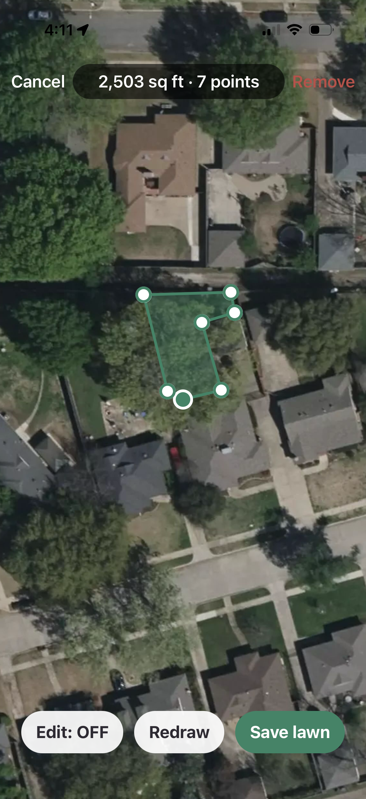
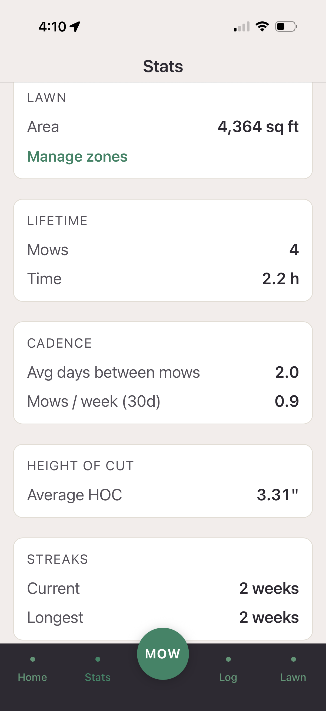
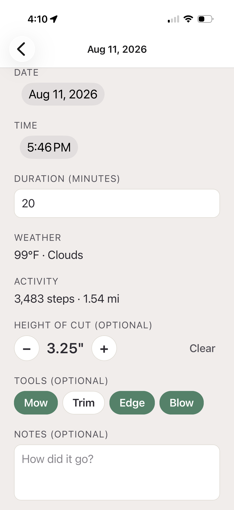
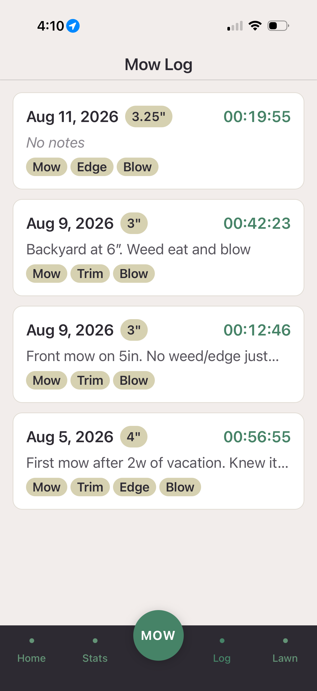

Klippa
Where lawns happen
Strava for people who mow their own lawn. Track every mow, map your yard once on satellite, build your streak, and prove the work — for the homeowner who mows their own lawn and is proud of it.
Get Klippa on TestFlight →
iPhone only · free during the beta · opens in the TestFlight app
What you get
- Mow timer & log. Start and stop the timer for each mow; it records the date, duration, and what you did.
- Satellite lawn map. Trace your yard on satellite once, then split it into zones — front, back, side — with areas that sum to your total.
- Streaks. Consecutive-week logging, so you can see the run and keep it going.
- Height of cut & job log. Record your HOC and the jobs done — mow, trim, edge, blow — per session.
- Weather on every mow. Conditions get stamped automatically when you save the mow.
- Steps & distance. Pulls how far you walked and your step count from Apple Health for each mow.




Built for the r/lawncare crowd — Bermuda, Zoysia, and the whole Dallas summer grind. If you already know your height of cut, this is for you.
Join the Dallas beta →
iPhone only · free during the beta · opens in the TestFlight app